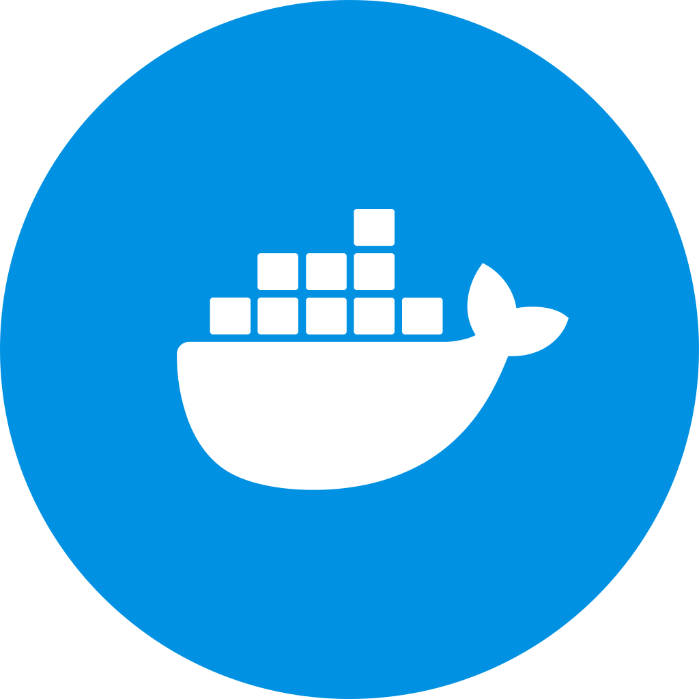

Docker Courseدورهی Docker ✔ Hands-on version✔ نسخهی تمرینیIn Lesson 6, your change to nginx's page was lost when you deleted the container. What if you could freeze the changed container into a new image? That's docker commit.در درس ۶، تغییری که در صفحهی nginx دادید با حذف کانتینر از بین رفت. چه میشد اگر میتوانستید کانتینر تغییرکرده را به یک ایمیج جدید منجمد کنید؟ این کار docker commit است.
Press → or Space to startبرای شروع → یا Space را بزنید
🧠 Blurred commands are ones you've already learned. Try to remember them, then click to check.🧠 دستورهای محو را قبلاً یاد گرفتهاید. سعی کنید به یاد بیاورید، بعد کلیک کنید و ببینید.
🖱 Hover over any part of a command to see what it does.🖱 نشانگر ماوس را روی هر بخش از دستور ببرید تا توضیحش را ببینید.
docker cp FROM TO works like the normal cp. web: in front of a path means “inside the container web”.docker cp FROM TO مثل cp معمولی کار میکند. web: قبل از یک مسیر یعنی «داخل کانتینر web».
❓ Copy out of a container too? Yes, just swap the order: docker cp web:/etc/nginx/nginx.conf . copies nginx's config file to the current folder on your PC.❓ از کانتینر به بیرون هم؟ بله، فقط ترتیب را عوض کنید: docker cp web:/etc/nginx/nginx.conf . فایل تنظیمات nginx را به پوشهی فعلی روی کامپیوتر شما کپی میکند.
sha256:29c20f0b1052ab139b6aa90b8092cb60cf14d17d50ce2f74355a82d89c1a8fc4 # the new image's IDIMAGE ID DISK USAGE CONTENT SIZE EXTRA my-web:handmade 29c20f0b1052 240MB 63.9MB
docker commit CONTAINER NAME:TAG takes everything inside the container right now, including your page, and saves it as a new image.docker commit CONTAINER NAME:TAG هر چیزی را که همین الان داخل کانتینر است، از جمله صفحهی شما، بهصورت یک ایمیج جدید ذخیره میکند.
✅ A brand-new container, and your page is there. In Lesson 6 it was lost; now it's saved in the image.✅ یک کانتینر کاملاً جدید، و صفحهی شما آنجاست. در درس ۶ از بین رفت؛ حالا در ایمیج ذخیره شده.
An image is built in layers, one per step. docker history lists them, newest first:یک ایمیج از لایهها ساخته میشود، یکی برای هر مرحله. docker history آنها را فهرست میکند، جدیدترین اول:
IMAGE CREATED CREATED BY SIZE 29c20f0b1052 5 seconds ago nginx -g daemon off; 81.9kB # ← your commit f9ea18bfa4fa 4 days ago CMD ["nginx" "-g" "daemon off;"] 0B # ← nginx's own steps <missing> 4 days ago STOPSIGNAL SIGQUIT 0B <missing> 4 days ago EXPOSE map[80/tcp:{}] 0B ...
nginx's layers show the exact steps its authors wrote (EXPOSE, CMD…).لایههای nginx دقیقاً مراحلی را که سازندگانش نوشتهاند نشان میدهند (EXPOSE، CMD و …).
Your layer only says nginx -g daemon off;, which is just the program that was running. It says nothing about what you changed.لایهی شما فقط میگوید nginx -g daemon off;، یعنی همان برنامهای که در حال اجرا بود. هیچ چیزی دربارهی تغییری که دادید نمیگوید.
Nobody can see what you changed or how, not even you a month later.هیچکس نمیتواند ببیند چه چیزی را و چطور تغییر دادید، حتی خودتان یک ماه بعد.
To make version 2, you'd have to repeat every manual step by hand.برای ساختن نسخهی ۲ باید همهی مراحل دستی را دوباره با دست انجام دهید.
Anything else you did in the container (test files, mistakes) is saved too.هر کار دیگری که در کانتینر کردید (فایلهای آزمایشی، اشتباهها) هم ذخیره میشود.
🔑 commit is fine for a quick experiment. For real images, the steps should be written down, so anyone can read them and build the same image again. That's what a Dockerfile is: the next lesson.🔑 commit برای یک آزمایش سریع خوب است. برای ایمیجهای واقعی، مراحل باید نوشته شوند تا هر کسی بتواند آنها را بخواند و همان ایمیج را دوباره بسازد. Dockerfile همین است: موضوع درس بعد.
docker cp FROM TOCopy files between your PC and a container (NAME:/path)کپی فایل بین کامپیوتر شما و کانتینر (NAME:/path)
docker commit CONTAINER NAME:TAGSave a container's current state as a new imageذخیرهی وضعیت فعلی کانتینر بهصورت ایمیج جدید
docker history IMAGEShow the layers an image is made ofنمایش لایههایی که ایمیج از آنها ساخته شده
⚠ The catch⚠ مشکلA commit doesn't record what you did; a Dockerfile doescommit ثبت نمیکند چه کاری کردید؛ Dockerfile ثبت میکند